Importation¶
L'écran Importation importe une nuit depuis la carte SD, la renomme et la transforme en séquences écoutables, sans jamais modifier vos fichiers d'origine. Il prend la forme d'un assistant en trois temps.
Le parcours en vidéo (31 s)
Importer une nuit depuis la carte SD : la carte se prend sous son étiquette dans le sélecteur, l'application annonce ce qu'elle y trouve, et le passage est créé. Les deux attentes de machine y sont accélérées quatre fois.
L'assistant d'import¶
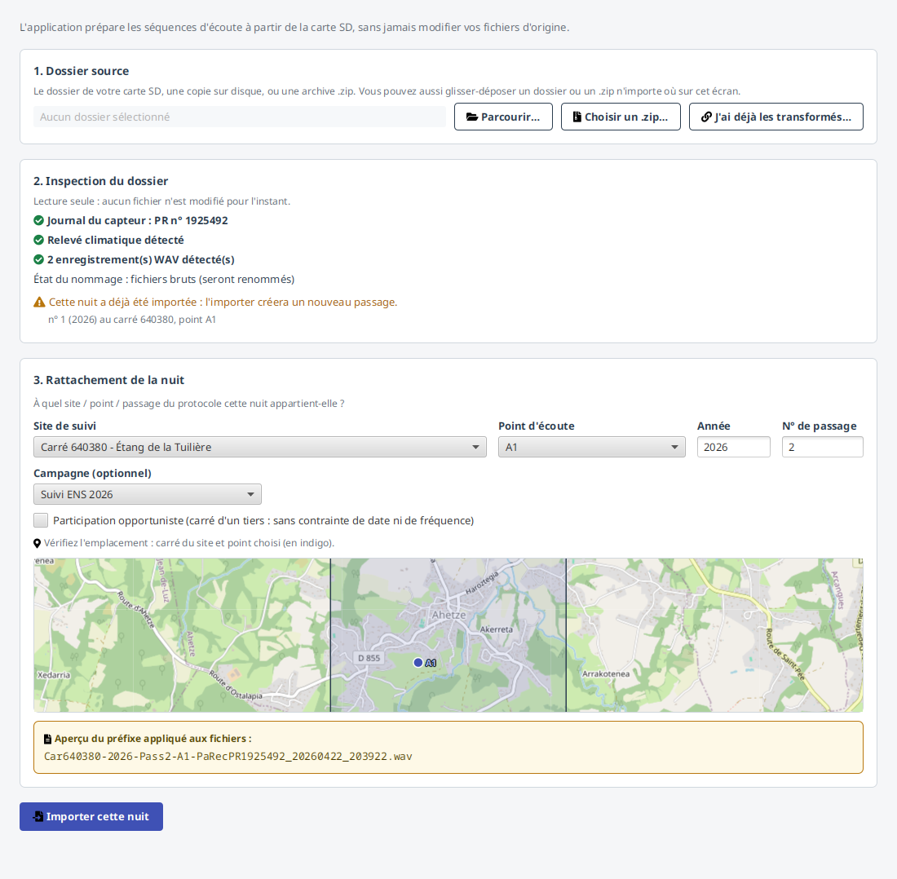
- Dossier source : désignez le dossier de la carte SD (ou une copie déjà sur disque). Si vous
choisissez une archive
.zip, le champ affiche l'archive que vous avez désignée, suivie de « (décompressé) » : l'application travaille dans un dossier temporaire, mais c'est bien votre choix qui reste affiché. - Inspection (lecture seule) : l'application détecte le journal du capteur, le relevé climatique et les enregistrements WAV, et annonce ce qu'elle va en faire. L'état du nommage nomme les opérations dans l'ordre : vos enregistrements seront copiés, puis renommés et transformés. C'est sur les copies que tout se passe. Vos fichiers d'origine ne sont jamais modifiés, ni pendant l'inspection ni après.
- Rattachement : indiquez le site, le point d'écoute, l'année et le numéro de passage. Le numéro reste grisé tant qu'aucun point n'est choisi, parce qu'il vous est proposé d'après le point : le premier numéro libre pour ce point et cette année. Le saisir avant reviendrait à le voir remplacé sans un mot. Un aperçu montre le préfixe qui sera appliqué. Une carte de confirmation (lecture seule) affiche le carré du site et ses points, le point choisi en surbrillance (indigo) et les autres en gris : un coup d'œil pour vérifier qu'on rattache la nuit au bon endroit. Une case Participation opportuniste est proposée à cette étape (voir ci-dessous).
Nuit réalisée sur le carré d'un autre observateur
Cochez Participation opportuniste : la nuit sera exemptée de la fenêtre calendaire (R3) et de l'intervalle conseillé entre deux passages (R4), et ne comptera pas dans le solde de saison du point. Un import cible un seul carré : la case vaut donc pour toutes les nuits de cet import, y compris quand la carte en contient plusieurs. Elle reste corrigeable après coup depuis Modifier le passage.
La campagne, proposée et non imposée¶
La section Rattachement porte aussi une liste Campagne (optionnel). Dès que vous choisissez un point d'écoute, l'application y propose la campagne de la dernière nuit enregistrée sur ce point : deux nuits d'affilée sur un même point relèvent presque toujours du même suivi, et le retaper à chaque import serait fastidieux.
C'est une proposition. Vous pouvez en choisir une autre, ou l'effacer pour n'en mettre aucune. Et dès que vous avez tranché vous-même, changer de point ne rappelle plus la proposition : deviner est un service, écraser votre décision serait une faute.
Un point sur lequel aucune nuit n'a encore de campagne ne propose rien, et ce n'est pas une anomalie : le rattachement est facultatif. La campagne retenue s'applique à toutes les nuits de cet import, une demande d'import ne visant qu'un seul carré.
Pour créer une campagne, voir Le passage.
Le bouton Importer cette nuit applique aux enregistrements le préfixe
CarXXXXXX-AAAA-PassN-YY-, puis les transforme en séquences de 5 s ralenties dix fois (une séquence
de 5 s devient 50 s à l'écoute, dans la bande audible). Un enregistrement de plus de 5 s produit
plusieurs séquences, chacune nommée avec l'heure réelle de son début (ex. …_225849,
…_225854, …_225859…) : c'est ce qui permet de retrouver, pour chaque observation Tadarida, la
séquence audio correspondante.
J'ai déjà les fichiers transformés¶
L'assistant ci-dessus part de vos enregistrements bruts (la carte SD) et les transforme. Mais il arrive que vous ayez déjà les séquences transformées d'une nuit dans un dossier, sans plus avoir la carte : une nuit préparée sur un autre poste, récupérée d'une sauvegarde, ou rangée sur un NAS. Dans ce cas, inutile de tout recalculer.
Le bouton « J'ai déjà les transformés… » crée le passage directement à partir de ce dossier, sans rejouer la transformation. Vous désignez le dossier, puis le point d'écoute auquel rattacher la nuit ; la série de l'enregistreur et la date sont lues dans les noms des fichiers.
L'application vous demande ensuite quoi faire des fichiers :
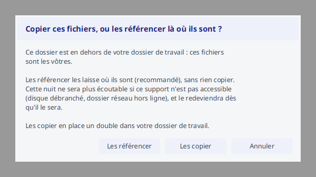
- Les laisser où ils sont (les référencer) : l'application ne copie rien, elle pointe vos fichiers là où ils vivent. C'est le choix recommandé quand ils sont déjà rangés ailleurs (disque externe, NAS, votre dossier de travail habituel). La nuit ne sera plus écoutable si ce support n'est pas accessible (disque débranché, dossier réseau hors ligne), et le redeviendra dès qu'il l'est de nouveau : l'application revérifie alors leur empreinte, pour être sûre que ce sont bien les mêmes fichiers.
- Les copier dans votre dossier de travail : l'application en prend une copie, comme pour un import ordinaire. La nuit reste écoutable même si le dossier d'origine disparaît.
Ce que ce geste ne remplace pas
C'est un raccourci pour des séquences déjà transformées. Pour importer une nuit depuis la carte SD (enregistrements bruts à renommer et transformer), utilisez l'assistant d'import ci-dessus.
Conserver les originaux pour ré-analyse (option)¶
L'import lit les enregistrements de la carte SD, les transforme en séquences d'écoute, et n'en garde pas de copie. Vos fichiers d'origine restent sur votre carte, intacts : l'application ne les modifie jamais, et n'a pas besoin de les dupliquer pour travailler.
L'écoute, la validation et le dépôt s'appuient tous sur les séquences transformées. Et si vous devez un jour récupérer une nuit archivée, l'application sait repartir de votre carte SD ou de votre sauvegarde : elle reconnaît vos fichiers à leur empreinte, qu'elle a relevée à l'import.
Si vous comptez ré-analyser vos enregistrements plus tard, avec d'autres réglages ou un autre outil, vous pouvez demander à l'application d'en conserver une copie : Réglages > Import > « Conserver les originaux pour ré-analyse ultérieure ».
Ce que coûte cette option
Une nuit d'enregistrements pèse plusieurs gigaoctets, et la copie représente environ les deux tiers du temps d'import. Activée, l'option rend donc l'import nettement plus long et remplit le disque bien plus vite. Ne l'activez que si vous savez que vous en aurez l'usage.
Votre choix est mémorisé d'un import à l'autre.
Si le disque n'a pas la place¶
Avant d'écrire quoi que ce soit, l'application vérifie qu'il reste assez de place pour la nuit à importer. Si ce n'est pas le cas, elle refuse et vous dit combien il manque, plutôt que de s'arrêter à mi-parcours en laissant un import incomplet.
Le contrôle se fait nuit par nuit : sur une carte qui en contient plusieurs, celles déjà importées restent acquises.
Quand l'option « conserver les originaux » est active, il faut deux fois la place : une fois pour la copie des enregistrements, une fois pour les séquences d'écoute. Le message vous propose alors de la désactiver, ce qui divise le besoin par deux.
Source compressée (.zip)¶
Vous pouvez aussi désigner une archive .zip (ou la glisser-déposer) plutôt qu'un dossier :
l'application la décompresse d'abord, avec une barre de progression et un bouton « Annuler »,
avant de poursuivre l'inspection comme pour un dossier ordinaire.
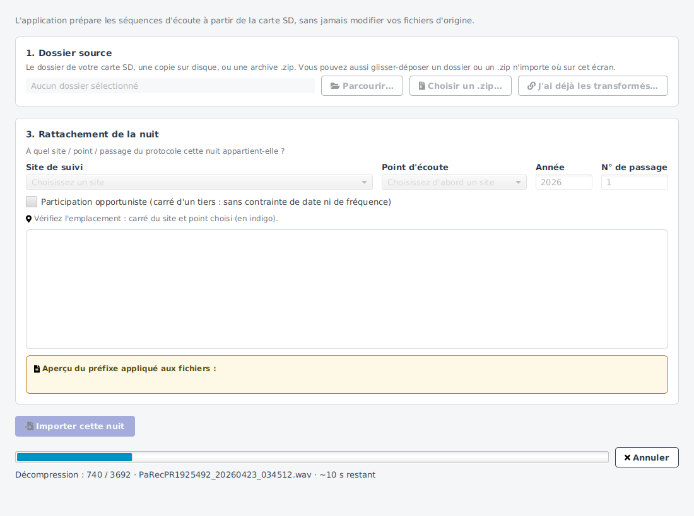
Sur un gros fichier, le compteur « X / N fichiers » ne bouge pas pendant plusieurs minutes : le volume déjà écrit s'affiche alors à côté du nom, pour que vous voyiez que la décompression avance. « Annuler » répond immédiatement, y compris au milieu d'un fichier.
Une archive peut être refusée¶
L'application ouvre là un fichier dont elle ne sait rien. Avant de décompresser, elle vérifie que l'archive ressemble à une carte SD et que le disque peut l'accueillir. Elle refuse, sans rien avoir écrit :
- s'il manque de la place : le message dit ce qu'il faudrait et ce qui reste. Vous pouvez libérer de l'espace, ou décompresser l'archive vous-même et désigner le dossier obtenu ;
- si elle contient beaucoup trop de fichiers, un fichier démesuré, ou un total démesuré.
Une archive qui se met à écrire plus qu'elle n'avait annoncé est également interrompue en cours de route, et le dossier temporaire est supprimé.
Ces limites sont larges : une vraie nuit de terrain passe sans que vous ayez quoi que ce soit à régler. Si l'une d'elles gênait une archive pourtant légitime, le message vous indique quoi faire.
L'inspection vous alerte¶
L'inspection signale les anomalies avant l'import, pour éviter d'importer une mauvaise nuit.
Un mélange dans le dossier (plusieurs enregistreurs aux séries différentes) déclenche un avertissement, sans bloquer l'import :
Seuls les enregistrements du journal sont importés
Quand un dossier mélange deux capteurs, l'import ne prend que les enregistrements portant la série du journal. Les autres ne sont pas importés, et ne disparaissent pas pour autant : ils figurent dans le rapport de fin, marqués ignorés, avec la raison - « enregistré par un autre capteur que celui du journal ».
Sans cette règle, la nuit importée porterait l'enregistreur du journal et des séquences venues d'ailleurs : une donnée qui se contredit elle-même, et qui partirait telle quelle au dépôt.
Vos fichiers d'origine ne sont pas touchés : rien n'est déplacé ni supprimé sur la carte. Si les enregistrements écartés vous appartiennent aussi, importez-les à part, avec leur journal.
⚠️ Cette règle s'applique à l'import d'une nuit. Sans journal (mode dégradé), rien n'est écarté : l'application ne peut pas décider laquelle des séries est la bonne quand la référence vient elle-même des fichiers.
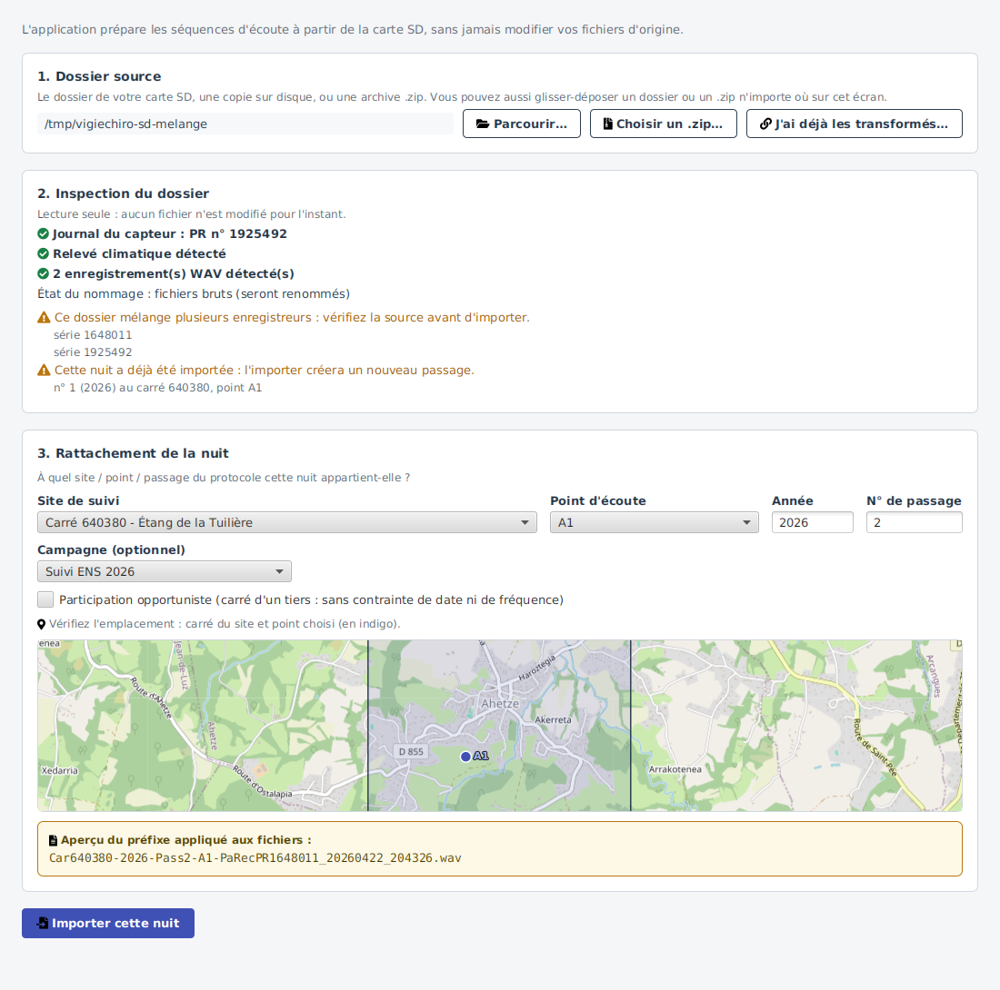
Le cas « mélange » en vidéo (35 s)
Un dossier contenant deux enregistreurs, de bout en bout : l'avertissement paraît pendant l'inspection et nomme les deux séries, le bouton d'import reste ouvert, et le compte rendu final annonce « 3 / 6 importés » avec les trois autres marqués ignorés.
Une incohérence entre le journal du capteur et les enregistrements (série ou date qui ne correspondent pas) est signalée plus fermement :
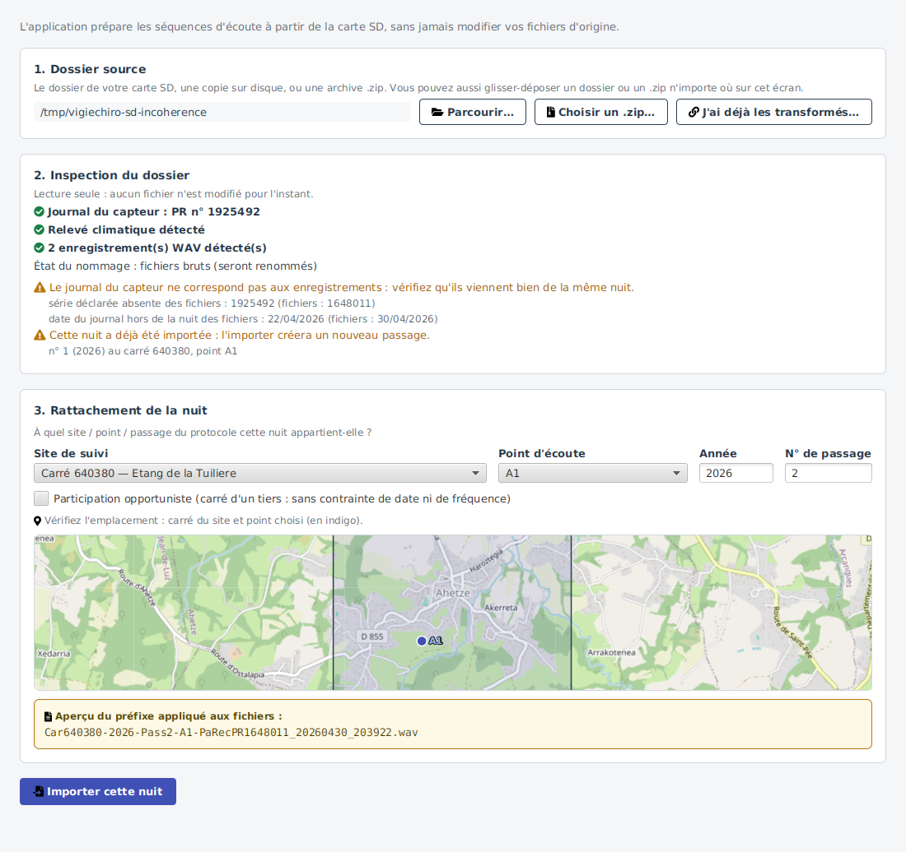
Chaque avertissement détaille ce qui cloche : les numéros de série trouvés pour un mélange, la série et la date en désaccord pour une incohérence, les passages déjà en base pour une nuit déjà importée. Vous n'avez pas à rouvrir le dossier pour savoir de quoi il s'agit.
Dans les deux cas, l'import reste possible : à vous de vérifier que le dossier correspond bien à ce que vous attendez avant de continuer. Le cas de plusieurs nuits d'un même enregistreur, lui, n'est pas un simple avertissement : il est pris en charge par le découpage décrit ci-dessous.
Plusieurs nuits sur une même carte¶
Si vous laissez l'enregistreur tourner plusieurs nuits d'affilée (jusqu'à saturation de la carte), le dossier contient les enregistrements de N nuits. Un passage Vigie-Chiro correspondant à une seule nuit, l'inspection détecte les nuits et propose de découper l'import : chaque nuit donnera un passage distinct (au même point, avec des numéros de passage consécutifs et la date propre de chaque nuit).
Une table des nuits apparaît alors, une ligne par nuit :
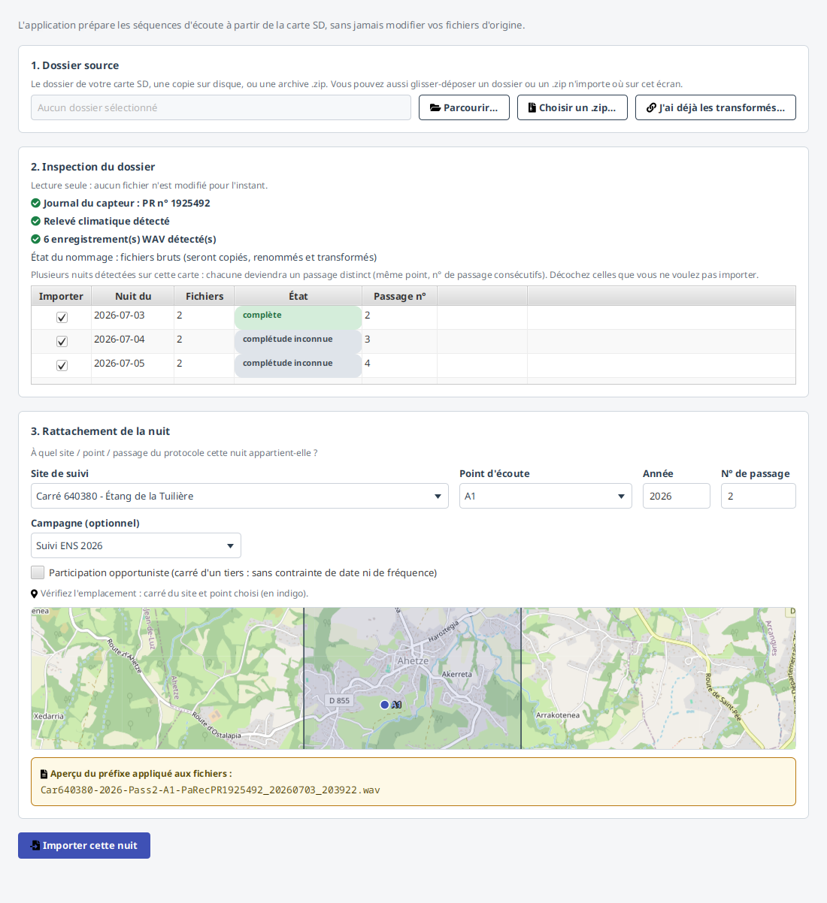
Chaque nuit garde les réglages du capteur qui étaient les siens
Si vous reprenez l'enregistreur entre deux séries de nuits et que vous changez ses réglages (fréquence d'échantillonnage, bande passante, horaires d'acquisition), le journal en garde la trace à chaque redémarrage. Chaque nuit importée reçoit alors les réglages en vigueur cette nuit-là, et non ceux de la première session enregistrée sur la carte.
- Importer : case à cocher (cochée par défaut). Décochez une nuit pour ne pas l'importer ; les numéros de passage proposés se renumérotent automatiquement pour rester consécutifs.
- Nuit du : date du soir de la nuit (date du futur passage).
- Fichiers : nombre d'enregistrements de la nuit.
- État : complète ou incomplète. Une nuit est signalée incomplète quand le journal montre qu'elle s'est arrêtée anormalement (carte SD pleine, interruption). Elle reste incluse par défaut : à vous de décider de la conserver (pour la faire traiter par Tadarida) ou de la décocher.
- Passage n° : numéro attribué à la nuit, auto-numéroté à partir du prochain numéro libre du point (« — » si la nuit est décochée).
- La mention « déjà importée » rappelle qu'un passage existe déjà en base pour cette nuit.
Les numéros sont proposés automatiquement (consécutifs depuis le prochain libre) ; le bouton Importer reste indisponible tant qu'aucune nuit n'est cochée ou qu'un numéro proposé est déjà pris. Chaque nuit incluse est importée indépendamment (une transaction par nuit) : si l'une échoue, les nuits déjà importées demeurent. À la fin, le récapitulatif indique le nombre de passages créés et la plage de dates couverte.
Une carte ne contenant qu'une seule nuit est importée comme avant, sans table (le parcours mono-nuit est inchangé).
Pendant l'import¶
Une fois lancé, l'import affiche une barre de progression (avec l'estimation du temps restant) et gèle le formulaire le temps de l'opération. En dessous, une table de suivi par fichier montre où en est chaque enregistrement : en attente, en cours (avec l'étape, copie puis transformation), terminé, ou rejeté avec la raison au survol. La copie et la transformation travaillent en parallèle sur plusieurs fichiers à la fois. En import multi-nuits, la table repart à chaque nuit.
Un clic droit sur cette table laisse choisir et réordonner ses colonnes (« Colonnes… »), comme sur les autres tableaux de l'application. Cet écran étant transitoire (la liste ne survit pas à l'import), la disposition n'y est pas mémorisée d'une fois sur l'autre : voir Personnaliser les tableaux.
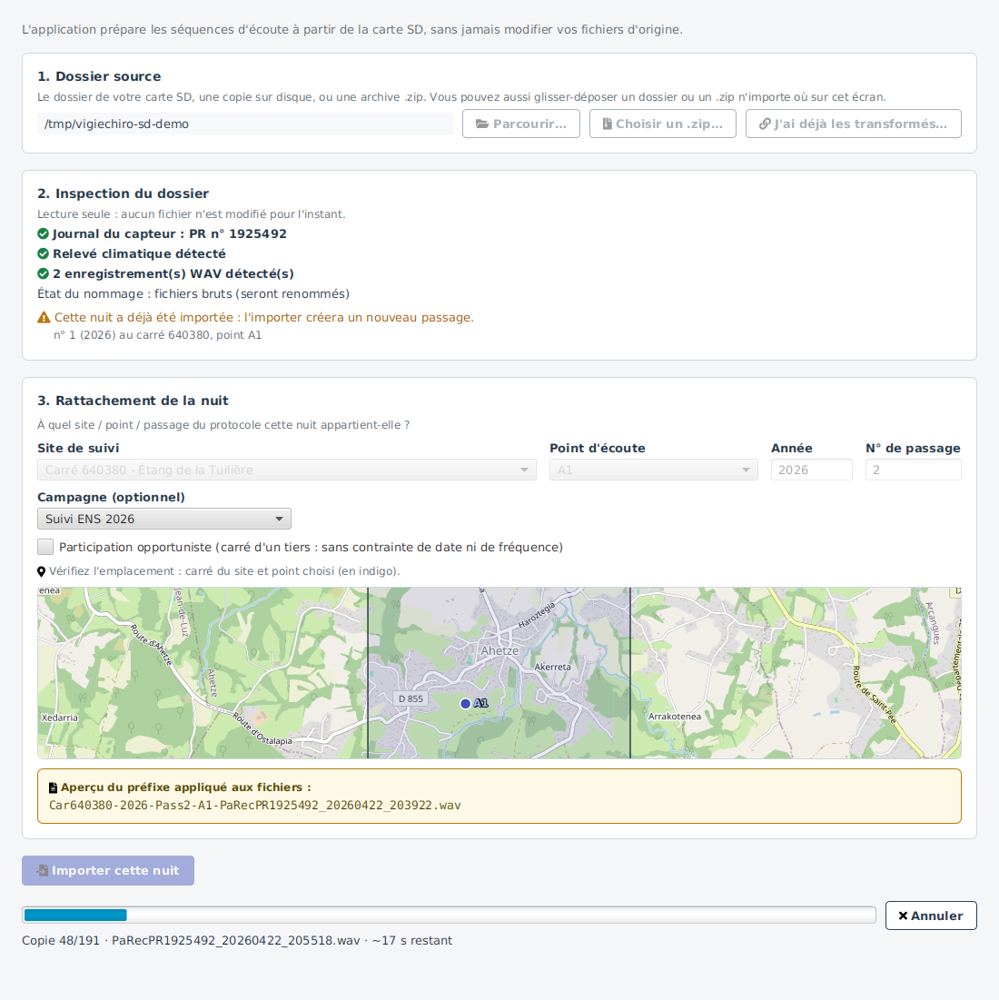
Compte rendu de fin d'import¶
L'import est résilient : un fichier illisible ou de format invalide n'interrompt pas toute la nuit. À la fin, un compte rendu répond aux trois questions que vous vous posez à ce moment-là, et il y répond en proportions plutôt qu'en listes.
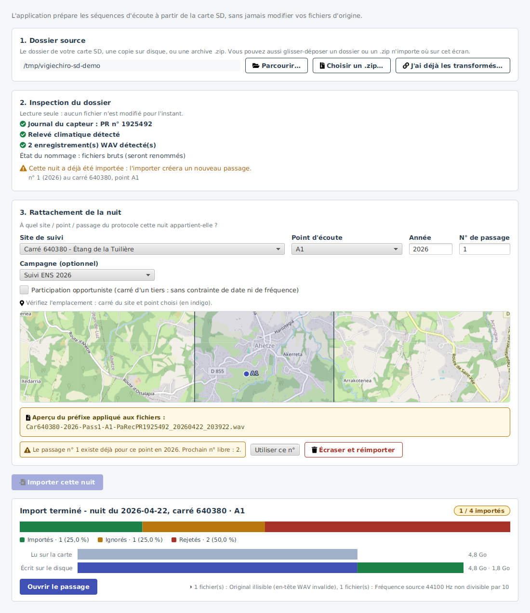
« Est-ce que ça s'est bien passé ? » La pastille chiffre le résultat (« 583 / 612 importés ») et la barre en montre la part : ce qui est passé, ce qui a été ignoré parce que non pertinent, ce qui a été rejeté. La somme fait toujours le total des fichiers de la source : aucun reliquat ne peut disparaître dans un « autres ».
« Qu'est-ce que ça m'a coûté sur le disque ? » Deux barres comparent, à la même échelle, ce qui a été lu sur la carte et ce qui a été écrit sur le disque : ce dernier ventilé entre les enregistrements bruts conservés et les séquences d'écoute produites. Si vous avez désactivé la conservation des bruts, la barre « écrit » se réduit d'autant : c'est là que se voit ce que ce réglage vous économise.
« Qu'est-ce que je fais maintenant ? » Le pied propose Ouvrir le passage, pas un bouton « Fermer ».
Ce que le compte rendu signale en plus¶
- les motifs de rejet, résumés en pied (« 6 fichiers déjà expansés, 2 en-têtes WAV illisibles ») et dépliables d'un clic : chaque motif ouvre la liste des fichiers concernés ;
- les avertissements encore vrais : si le dossier mélangeait plusieurs enregistreurs, ou si le journal du capteur ne correspondait pas aux fichiers, le compte rendu vous le rappelle. Importer ne résout pas ces réserves : cela les inscrit dans le passage créé ;
- le doublon de nuit : si vous avez choisi d'importer une nuit déjà présente, il rappelle combien de passages existaient déjà, et la liste s'ouvre comme les motifs ;
- les anomalies du journal du capteur : réveil non programmé, batterie faible, horloge resynchronisée. Elles n'expliquent pas toujours un problème, mais elles éclairent une nuit qui semble incomplète ;
-
la participation créée sur Vigie-Chiro, quand vous êtes connecté et que le site est relié. L'import écrit alors sur la plateforme, et il vous le dit plutôt que de vous le laisser découvrir au dépôt.
La mention vous rappelle aussi de compléter la fiche sur le portail : Companion y déclare la nuit, mais il ne connaît ni la météo que vous avez observée, ni le matériel exact, ni ce que vous voudriez signaler en commentaire. Une participation créée n'est donc pas une participation terminée.
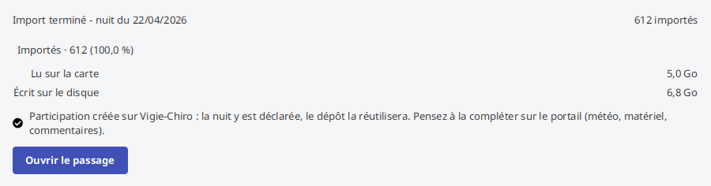
Si la carte portait plusieurs nuits, chacune reçoit sa participation, et la mention se met au pluriel. C'est le cas d'une carte laissée plusieurs jours sur le terrain, et c'est celui où l'on oublie le plus facilement d'aller finir les fiches.
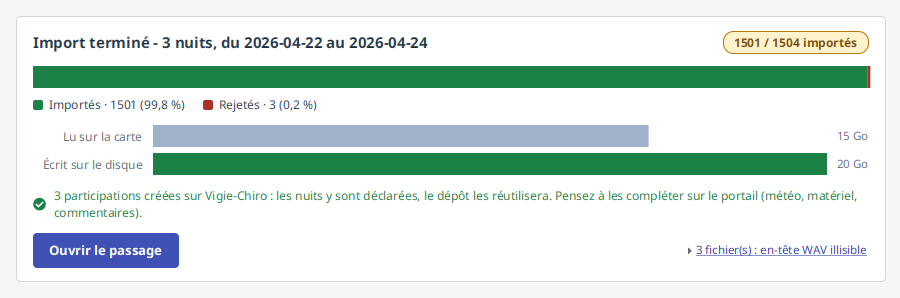
Chaque mention porte une icône accordée à son registre : une coche pour une bonne nouvelle, un « i » pour un fait de contexte, un triangle pour ce sur quoi il faudra revenir : en plus de sa couleur, pour rester lisible si vous distinguez mal les couleurs.
Sécurités et cas particuliers¶
Au-delà du chemin nominal, l'import intègre plusieurs garde-fous qui vous protègent des erreurs courantes. La plupart agissent en silence ; les autres vous demandent confirmation avant toute action irréversible.
Nuit déjà importée (doublon)¶
Si le passage que vous rattachez (même site, point, année et numéro de passage) a déjà été importé, l'application le détecte et vous demande confirmation avant d'aller plus loin. Vous choisissez alors d'ignorer la nuit (garder l'existant) ou de l'écraser (remplacer l'ancien import). L'écrasement est atomique : soit le remplacement aboutit entièrement, soit rien n'est modifié, jamais un état intermédiaire. Le rapport final distingue les enregistrements importés, ignorés et rejetés.
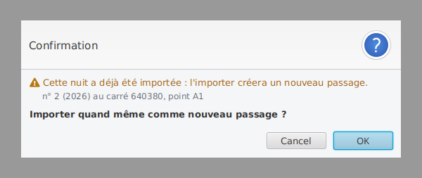
Choisir d'écraser demande deux confirmations. La première pose le principe : ce numéro de passage est déjà pris, voulez-vous remplacer la nuit existante ?
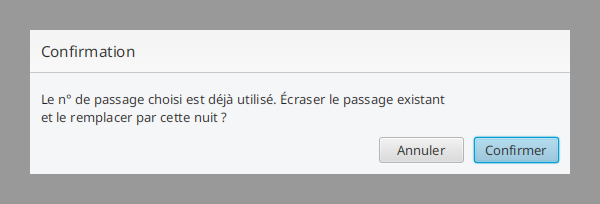
La seconde rappelle ce qui sera définitivement supprimé (les séquences, et le cas échéant les validations Tadarida déjà saisies) : l'action est irréversible.
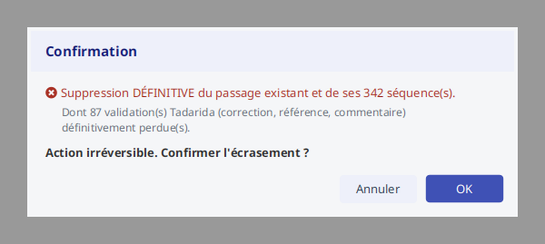
Par sécurité, une sauvegarde automatique de la base est écrite juste avant l'écrasement (dans
<workspace>/sauvegardes) : si cette sauvegarde échoue, l'écrasement n'a pas lieu. Vous pouvez donc
toujours revenir en arrière via ☰ → Restaurer une sauvegarde… (voir Sauvegarder et restaurer la
base).
Nuit déjà récupérée depuis Vigie-Chiro¶
Il arrive que la nuit de votre carte soit déjà là sans que vous l'ayez jamais importée : la synchronisation avec Vigie-Chiro rapatrie les nuits que la plateforme connaît, avec leurs observations et leur rattachement à la participation, mais sans leur audio - la plateforme ne le renvoie pas.
Quand l'assistant reconnaît cette situation, il vous le dit et retire les deux gestes habituels de la zone d'avertissement, parce qu'ils vous coûteraient quelque chose :
- « Utiliser ce n° » importerait la nuit une seconde fois, sur un numéro voisin. Vous vous retrouveriez avec deux moitiés de la même nuit : l'une avec ses observations et son rattachement, l'autre avec son son.
- « Écraser et réimporter » supprimerait la nuit existante, donc ses observations, vos validations et son rattachement - pour réimporter un son qu'on peut lui rendre sans rien perdre.
Reste « Ouvrir cette nuit », qui vous conduit à sa fiche. De là, « Réactiver ce passage » rebranche l'audio de votre carte sur la nuit existante : elle garde ses observations, vos validations et son rattachement, et retrouve son son (voir Réactiver un passage).
Reprise d'un import interrompu¶
Si un import a été interrompu (fenêtre fermée, coupure, annulation), il suffit de le relancer : l'application reconnaît les fichiers déjà copiés et transformés et les saute, pour reprendre là où elle s'était arrêtée au lieu de tout refaire.
Import sans journal (mode dégradé)¶
Le journal du capteur enrichit l'inspection (série, dates, fréquence d'acquisition), mais n'est pas obligatoire : si le dossier n'en contient pas, l'import reste possible en mode dégradé. Les contrôles qui dépendent du journal sont simplement allégés ; vous restez responsable de vérifier que le dossier correspond bien à la nuit attendue.
Intégrité des fichiers et espace disque¶
Pendant la copie, l'application vérifie l'intégrité de chaque enregistrement (comparaison d'empreinte entre l'original et la copie) pour écarter une copie corrompue. Si le disque est plein, un message l'indique explicitement et les fichiers temporaires sont purgés pour ne pas laisser le disque encombré.
Numéro de passage, préfixes et enregistrements déjà ralentis¶
- Numéro de passage déjà pris : au rattachement, si ce numéro est déjà utilisé sur ce point, un pré-contrôle vous en avertit avant l'import.
- Fichiers déjà préfixés : si les enregistrements portent déjà un préfixe Vigie-Chiro (nuit déjà renommée), l'application ne le double pas. Tant que ce préfixe correspond au rattachement choisi, l'import se déroule normalement - réimporter une nuit déjà renommée est un parcours prévu.
- Enregistrements déjà ralentis : un fichier dont le son a déjà subi l'expansion temporelle ×10 est rejeté (avec explication dans le rapport), pour éviter une double expansion qui rendrait les fréquences dix fois trop basses. Importez toujours les fichiers bruts issus du capteur.
Ces avertissements-là sont non bloquants : ils vous alertent sans vous empêcher d'importer.
Un préfixe qui ne correspond pas au rattachement bloque l'import
Si les fichiers portent le préfixe d'un autre carré ou d'un autre passage - par exemple
Car130711-… alors que vous les rattachez au carré 640380 - l'import est refusé.
Ce n'est pas une précaution de forme. Les noms existants ne sont jamais réécrits : ces fichiers partiraient tels quels au dépôt, et la participation du 640380 recevrait des sons estampillés d'un autre carré. La donnée serait incohérente avec elle-même, sur la plateforme nationale.
Deux sorties : corrigez le rattachement pour qu'il corresponde aux fichiers, ou repartez des originaux non préfixés issus du capteur.
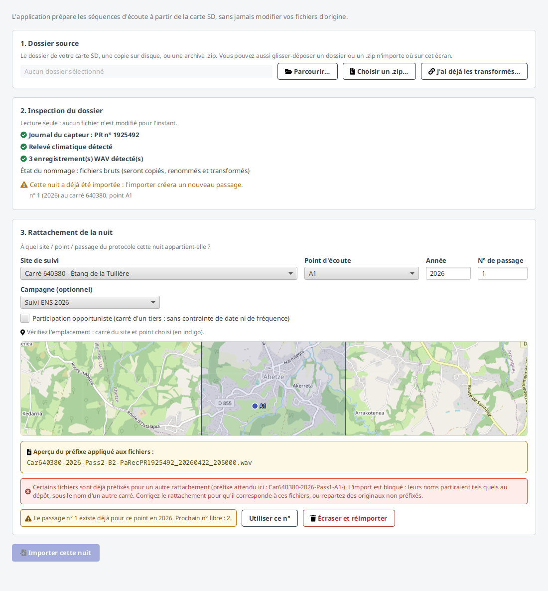